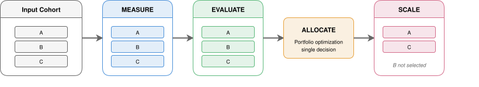

Impact Engine — System
Science that stays in notebooks doesn't scale. The architecture behind Impact Engine turns methodology into infrastructure — independently deployable, config-driven, and built through agent-driven development.
How is it wired? — Pipeline Design

Fan out per initiative, fan in at the decision boundary, fan back out for the winners.
Initiatives are independent until the allocation decision. The
pipeline exploits that — measuring and scoring in parallel, then
synchronizing only where a joint decision requires it. One YAML
config connects four independent packages into a single run: fan
out per initiative, synchronize at the allocation boundary, fan
back out for scaled deployment. Components communicate through
plain dict boundaries, so each package is independently
deployable and testable without the full pipeline.
How does it extend? — Extension Points
Adding a new causal model, decision rule, or scoring function requires no changes to the package itself. Each component exports its registry and interface — register an adapter from your own code, and the pipeline picks it up. One new class, zero pipeline changes, no fork required.

The Measure component illustrates the pattern: four registries, each with a Custom slot. Evaluate and Allocate follow the same structure.
How is it built? — Agentic Support
A system that requires its builder to enforce every convention creates
a dependency. The entire ecosystem is built through
agent-driven development
— agents read the codebase conventions before writing a single line,
operate within explicit interface contracts, and validate every change
against the same lint, tests, and pre-commit hooks a human would face.
Every repo carries a hierarchical CLAUDE.md with dependency
graph, naming rules, and interface contracts, read as runtime instructions
before any file is touched. Whether a human or an AI made the change,
the pipeline can't tell — and that's the point.
Further Reading
Software Design
R.C. Martin — Clean Code: A Handbook of Agile Software Craftsmanship (2008)
J.K. Ousterhout — A Philosophy of Software Design (2nd ed., 2021)
Agentic Support
Anthropic — Building Effective Agents (Anthropic Blog, 2024)
R. Jansen — Agent-Driven Development: The Next Paradigm Shift in Software Engineering (DEV Community, 2025)